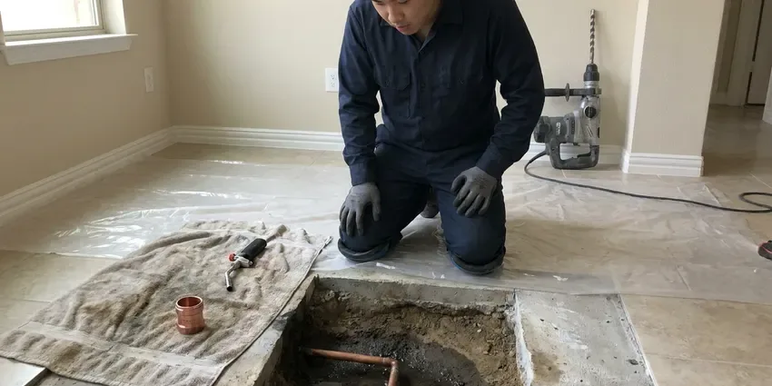

Septic Tank Repair in Madison, AL
For reliable septic tank repair in Madison, AL, look no further than BRV Plumbing. We handle all types of septic system issues with expertise.
- Fast Septic Diagnostics
- Experienced Local Technicians
- Upfront Pricing
- Guaranteed Work

Facing Septic Tank Trouble in Madison, AL?
Don't let a failing septic system disrupt your home, contact BRV Plumbing for immediate service.
Reliable Septic Tank Repair for Madison, AL Homeowners
BRV Plumbing specializes in all aspects of septic tank repair for homes throughout Madison, AL. From diagnosing mysterious odors to fixing major backups, our certified plumbers have the tools and training to get your system running smoothly again.
Our expertise includes:
- Diagnosing and repairing septic tank leaks.
- Fixing baffle failures and inlet/outlet pipe issues.
- Addressing drain field clogs and saturation problems.

Additional Plumbing Repair Services in Madison, AL
We offer expert plumbing repair services across Madison, AL to stop leaks, clear blockages, and keep every fixture working the way it should.


Customers
Why Choose BRV Plumbing for Septic Tank Repair in Madison, AL?
Choosing the right contractor for septic tank repair is crucial for the longevity of your system and the health of your property. BRV Plumbing brings years of dedicated experience to every job, ensuring proper diagnosis and repair.
- Local Knowledge, Our team has extensive experience with the types of septic systems common in Madison and the surrounding Alabama region.
- Advanced Tools, We utilize modern diagnostic equipment like sewer cameras to accurately pinpoint septic tank issues without unnecessary excavation.
- Code Compliance, All septic tank repairs are performed strictly to Alabama plumbing codes and local Madison regulations, ensuring safety and legality.
Citywide Coverage
BRV Plumbing proudly serves every neighborhood and community within Madison for all septic tank repair needs. No matter where you are located, our technicians are dispatched promptly to address your septic system emergencies or routine repairs.
Experienced Team
Each BRV Plumbing technician working on septic tank repair in Madison, AL, is highly experienced and certified. They approach every job with precision and a deep understanding of the intricate workings of septic systems.
Safety-First Approach
BRV Plumbing ensures that all septic tank repairs are conducted with the highest regard for safety and environmental protection. We follow all local Madison and Alabama health department guidelines to prevent contamination and ensure proper waste handling.
Trusted Certified Madison Plumbing Services Professionals
At BRV Plumbing, we take pride in providing licensed, certified plumbing services throughout Madison, AL. Backed by leading industry credentials, our experienced plumbers combine technical skill with genuine customer care. Whether it is repair, installation, or maintenance, we follow strict safety and quality standards to deliver lasting results you can trust.
Call Us Now PHCC Plumbing Contractor Recognition
PHCC Plumbing Contractor Recognition Better Business Bureau (BBB) Accreditation
Better Business Bureau (BBB) Accreditation Angi Certified Pro
Angi Certified Pro ISO 9001 Quality Management Certification
ISO 9001 Quality Management CertificationReliable Septic Tank Repair Services in Madison, AL
Septic Tank Leak Repair in Madison
Septic tank leaks can lead to unpleasant odors, soggy spots in your yard, and potential groundwater contamination. Our technicians use advanced dye testing and camera inspections to locate the source of the leak, whether it's a crack in the tank or a compromised pipe connection. We provide durable repair solutions using specialized sealants and patching materials designed for the harsh environment of a septic tank in Madison, ensuring a watertight seal and preventing future issues.

Baffle Repair and Replacement in Madison, AL
The inlet and outlet baffles within your septic tank are critical for proper waste separation and preventing solids from entering the drain field. If these baffles corrode or break, it can lead to clogs and system failure. BRV Plumbing can inspect your baffles using camera technology and perform targeted repairs or full replacements with durable PVC or concrete components, restoring the efficient operation of your septic system in Madison, AL.
Drain Field Clog Remediation in Madison
A clogged drain field is a common cause of septic system backups and can be a significant issue for homeowners in Madison. This can be caused by excessive solids, tree root intrusion, or soil compaction. We offer professional drain field remediation, which may include hydro-jetting the distribution lines, addressing root infiltration, or assessing the soil's percolation capacity to restore proper effluent absorption and prevent future saturation.
Septic Pipe Repair and Replacement in Madison, AL
Damaged pipes leading to or from your septic tank can cause backups, leaks, and unpleasant odors. These pipes, often made of PVC or cast iron, can crack due to shifting soil, root invasion, or age, especially in the varied soil conditions found across Alabama. BRV Plumbing offers comprehensive pipe repair and replacement services, including excavation, precise pipe fitting, and backfilling, ensuring the integrity of your entire septic system in Madison, AL.
Emergency Septic Tank Repair in Madison
Septic system failures rarely happen at convenient times. When you're facing an emergency septic backup or overflow in Madison, BRV Plumbing is here to provide rapid response. Our emergency team is equipped to diagnose and implement immediate solutions to prevent further damage to your property and restore essential plumbing services, minimizing disruption to your household.
Commercial Septic System Repair in Madison, AL
Businesses with septic systems in Madison, AL, face unique challenges due to higher usage and specific waste types. BRV Plumbing provides specialized repair services for commercial septic tanks and drain fields, understanding the importance of minimizing downtime. We work efficiently to address issues like overloaded systems, grease trap overflows, and industrial waste impact, ensuring your business operations continue uninterrupted and in compliance with local regulations.
Septic Tank Alarm Troubleshooting in Madison
Many modern septic systems, especially those with pumps or advanced treatment units, include alarms to indicate high water levels or system malfunctions. If your septic alarm is sounding in Madison, it's a clear sign of trouble. BRV Plumbing technicians can accurately troubleshoot the cause of the alarm, whether it's a float switch issue, pump failure, or a clogged line, and perform the necessary repairs to silence the alarm and restore system balance.

Cost-Effective Septic Tank Repair in Madison, AL
Understanding the cost of septic tank repair is a major concern for homeowners in Madison, AL. BRV Plumbing provides transparent, upfront pricing after a thorough diagnosis, so you know exactly what to expect. We focus on providing the most cost-effective solution without compromising quality, often offering repair options that extend the life of your existing system rather than pushing for premature replacement, saving you money in the long run.
Septic Tank Repair Near Me in Madison, AL
When you search for 'septic tank repair near me' in Madison, AL, you want a local expert who understands your community and can respond quickly. BRV Plumbing is deeply rooted in the Alabama region, providing personalized service that larger, impersonal companies can't match. We pride ourselves on being your neighborhood plumbing solution.
Our local presence means faster response times and technicians familiar with the specific septic system challenges common in Madison homes. Whether you're in the historic district or a newer development, BRV Plumbing is the trusted choice for reliable septic tank repair near you.
BRV Plumbing at a Glance
- Licensed and insured plumbers serving Madison, AL
- 24/7 emergency service with same-day scheduling
- Clear written estimates, no hidden fees
- 4.8-star rated by 549+ Alabama customers
Madison Map
Madison Information
- Population
- 60,854
- Area codes
- 256/205/938
- Service area
- Madison and communities within 40 miles
- Nearby
- Huntsville, Athens, Decatur, Florence
The unique clay soils and high water table in certain areas of Madison, AL can significantly impact septic system performance, making expert diagnosis and durable repairs essential for home longevity.
Expert Services
Trust our professionals for reliable BRV Plumbing solutions in Madison, AL.
Our Specialized Plumbing Services in Madison, AL
At BRV Plumbing, we provide a complete range of plumbing services across Madison, AL. From leak detection to full system installations, our team ensures fast, precise, and affordable service for both residential and commercial properties. Explore our core services below:


How Our Septic Tank Repair Process Works in Madison, AL
Our structured approach to septic tank repair in Madison, AL guarantees a thorough diagnosis and lasting solution for your plumbing issues.
Request a Quote
Contact BRV Plumbing by calling (256) 391-9413 to schedule your septic tank repair service. Our friendly staff will gather initial information about your issue and set up a convenient appointment time.
On-Site Diagnosis
Our certified technician will arrive at your Madison property to perform a comprehensive inspection of your septic system. We use advanced tools, including sewer cameras, to accurately pinpoint the cause and extent of the problem.
Expert Repair
Based on the diagnosis, we will present you with a clear explanation of the issue and transparent pricing for the recommended repairs. Once approved, our team will execute the repair with precision and adherence to all local codes.
Frequently Asked Questions About Septic Tank Repair in Madison
The cost of septic tank repair in Madison, AL can vary widely, typically ranging from $300 for minor issues like a broken baffle to $5,000 or more for major problems such as drain field remediation or tank replacement. Factors include the nature of the problem, required excavation, and parts needed. BRV Plumbing provides upfront, transparent pricing after a thorough on-site diagnosis.
If your septic tank is overflowing, immediately stop all water use in your home to prevent further spillage. Avoid contact with the wastewater and call BRV Plumbing at (256) 391-9413 for emergency service. We will dispatch a technician to assess the situation and begin repairs as quickly as possible.
To extend your septic system's life, ensure regular pumping every 3-5 years, avoid flushing non-biodegradable items, minimize harsh chemical use, conserve water, and prevent vehicle traffic over the drain field. Regular inspections by BRV Plumbing can also catch small issues before they become major problems.
Yes, BRV Plumbing stands behind the quality of our work. We offer warranties on our septic tank repair services and the parts we install. The specific warranty details will be provided at the time of service, giving you peace of mind that your repair is covered.
For minor repairs like baffle replacement, a permit may not be required. However, significant repairs that involve excavation, major pipe replacement, or any work on the drain field typically require permits from the local health department or building authority in Madison, AL. BRV Plumbing will help you navigate the permitting process and ensure all work is compliant.
BRV Plumbing services and repairs all major septic tank brands and types, including concrete, fiberglass, and plastic tanks from manufacturers like Infiltrator Systems, Presby Environmental, and Advanced Drainage Systems (ADS). Our technicians are experienced with various septic system designs, from conventional gravity systems to aerobic treatment units.
The duration of septic tank repair depends on the complexity of the issue. Simple repairs like a baffle replacement might take a few hours, while more extensive work such as drain field repair or pipe replacement could take one to several days, especially if excavation is involved. Our technicians will provide an estimated timeline during the diagnosis.
We strongly advise against DIY septic tank repairs. Septic systems are complex and involve hazardous waste. Improper repairs can lead to further damage, costly environmental contamination, and health risks. It's best to rely on licensed professionals like BRV Plumbing who have the expertise, tools, and safety protocols to handle these repairs correctly in Madison, AL.
What People Are Saying About Our Plumbing Experts?

Patricia H.
We had a slab leak that two other companies could not find. BRV Plumbing located it in under an hour, explained our options, and the price matched the quote to the dollar.
Slab Leak Repair · Decatur, AL
James P.
Our commercial plumbing system had a leak under the sink, and BRV Plumbing handled it professionally. The plumbers arrived quickly and restored everything without disruption to our customers.
Commercial Plumbing · Athens, AL
Laura S.
I scheduled a water heater replacement, and the team made the process smooth and affordable. The new unit works perfectly, and they cleaned up after completing the job.
Water Heater Replacement · Birmingham, ALSofia M.
Two new toilets installed in one visit, no mess left behind, and the tech even adjusted a faucet he noticed was dripping. Fair pricing and really friendly.
Toilet Installation · Birmingham, ALRobert G.
The trenchless sewer replacement saved our front yard. They walked us through the camera inspection footage first so we knew exactly what we were paying for.
Sewer Line Replacement · Huntsville, AL
Mark T.
When our office needed drain cleaning, BRV Plumbing provided quick, reliable service. The plumber arrived on time and made sure every drain flowed perfectly before leaving. Very satisfied.
Drain Cleaning · Decatur, AL